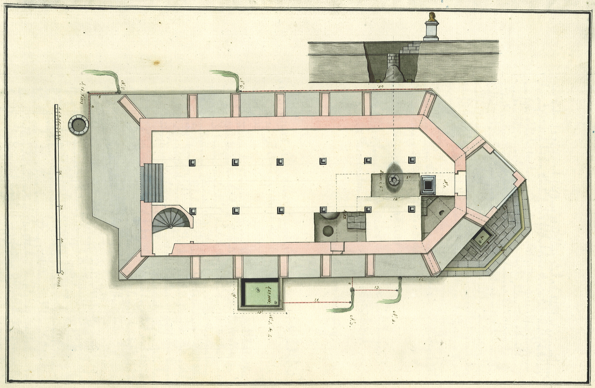
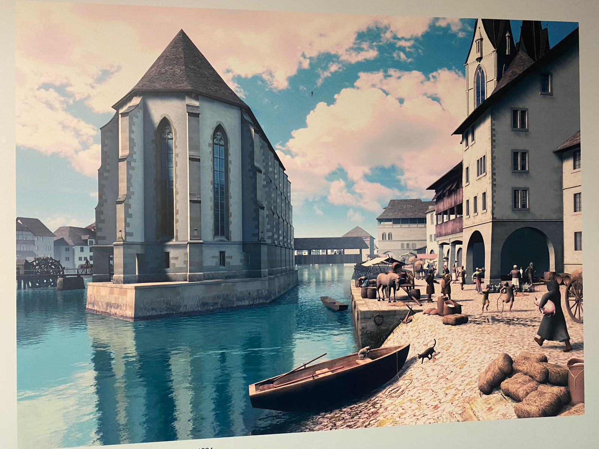

Die Wasserkirche in Zürich ist ein architektonisches Meisterwerk, das nicht nur aufgrund seiner Schönheit, sondern auch aufgrund seiner historischen Bedeutung herausragt. Die Evolution der Architektur dieses bemerkenswerten Gebäudes spiegelt die wechselvolle Geschichte und den kulturellen Wandel der Stadt Zürich wider.
Die Ursprünge der Wasserkirche reichen bis ins 10. Jahrhundert zurück, als an dieser Stelle eine romanische Kirche namens St. Peter stand. Im Laufe der Jahrhunderte wurde das Gebäude mehrmals umgebaut und erweitert, wodurch es seinen heutigen gotischen Charakter erhielt. Der markante Turm und die eleganten Bögen zeugen von der kunstvollen Handwerkskunst und dem architektonischen Können vergangener Zeiten.
Was die Wasserkirche jedoch wirklich einzigartig macht, ist ihre Lage auf einer Insel inmitten des Flusses Limmat. Dieses ungewöhnliche Merkmal hat ihre Gestaltung und Entwicklung maßgeblich beeinflusst. Im Laufe der Zeit wurden Brücken und Verbindungswege geschaffen, um den Zugang zur Kirche zu erleichtern und sie mit der umliegenden Stadt zu verbinden. Diese architektonischen Anpassungen haben die Wasserkirche zu einem faszinierenden Symbol der Verbindung zwischen dem spirituellen und dem weltlichen Leben gemacht.
Ein weiterer wichtiger Aspekt der Evolution der Wasserkirche ist ihre Nutzung im Laufe der Zeit. Ursprünglich als katholische Kirche geweiht, wurde sie während der Reformation im 16. Jahrhundert zu einem wichtigen Zentrum der protestantischen Bewegung in Zürich. Die Kirche wurde zum Ort bedeutender theologischer Debatten und zum Schauplatz von historischen Ereignissen. Dieser Wechsel der religiösen Ausrichtung spiegelt sich in der Architektur wider, da im Laufe der Zeit Anpassungen vorgenommen wurden, um den neuen liturgischen Anforderungen gerecht zu werden.
Die Wasserkirche ist jedoch nicht nur ein historisches Denkmal, sondern auch ein Ort der kulturellen Bedeutung. Im Laufe der Jahrhunderte hat sie zahlreiche kulturelle Veranstaltungen beherbergt, darunter Konzerte, Ausstellungen und Vorträge. Diese vielfältige Nutzung hat die Wasserkirche zu einem lebendigen Zentrum der Künste gemacht und ihre Architektur weiterentwickelt, um den modernen Anforderungen gerecht zu werden.
Heute ist die Wasserkirche nicht nur eine wichtige Touristenattraktion, sondern auch ein Ort der Besinnung und des Dialogs. Ihr architektonischer Reichtum und ihre historische Bedeutung machen sie zu einem wertvollen kulturellen Erbe, das von Generation zu Generation weitergegeben wird.
Die Evolution der Architektur der Wasserkirche in Zürich ist ein faszinierendes Beispiel dafür, wie sich die gebaute Umwelt im Laufe der Zeit verändert und an die Bedürfnisse und Vorlieben der Gesellschaft anpasst. Sie ist ein Zeugnis für die reiche Geschichte und Kultur der Stadt Zürich und steht als Symbol für die Verbindung zwischen Vergangenheit und Gegenwart.

Abb.1: Wasserkirche um 10. Jh.
Abb.2: Grundriss der Wasserkirche
Abb.3: Wasserkirche zur Zeit als das Ufer noch nicht verbreitert wurde.
Quelle: Wikipedia
Hilfsmittel: ChatGPT